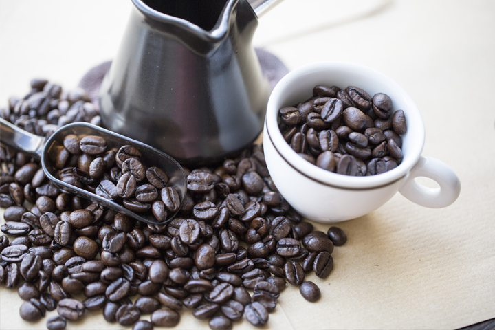

Эспрессо Энерджи
Описание товара
Смесь бразильской и колумбийской арабики с добавлением робусты
Характеристики товара
| Степень обжарки | Средняя |
| Крепость | Высокая |
| Помол | Мелкий |
| Страна происхождения | Бразилия, Колумбия |
| Масса упаковки | 100 г |
| Наличие на складе | Есть |
| Цена (100 г) | 250 р. |
Подробное описание товара
Эспрессо Энерджи— это дуэт бразильской и колумбийской арабики с аккомпанементом из индонезийской робусты. 25-процентное содержание робусты дарит напитку мужественную крепость и красивую плотную пенку. Любой сорт из линейки «Эспрессо» оптимально подходит для приготовления кофе в кофемашине. При ежедневном приготовлении кофе в эспрессо-машине особенно удобно сразу купить кофе в зёрнах в вакуумной пачке, чтобы его аромат был максимально свежим. Благодаря насыщенности вкуса, «Эспрессо Энерджи» отлично подходит для создания коктейлей. Даже самый простой вариант сочетания холодного кофе и молока в пропорции 1:1 порадует ярким вкусом и отменным ароматом. Высокое сочетание кофеина, в избытке имеющегося в «Эспрессо Энерджи», и особой аминокислоты, содержащейся в молоке и помогающей улучшить эмоциональное состояние, даст прекрасный освежающий эффект и поможет сконцентрироваться, несмотря на любую работу.